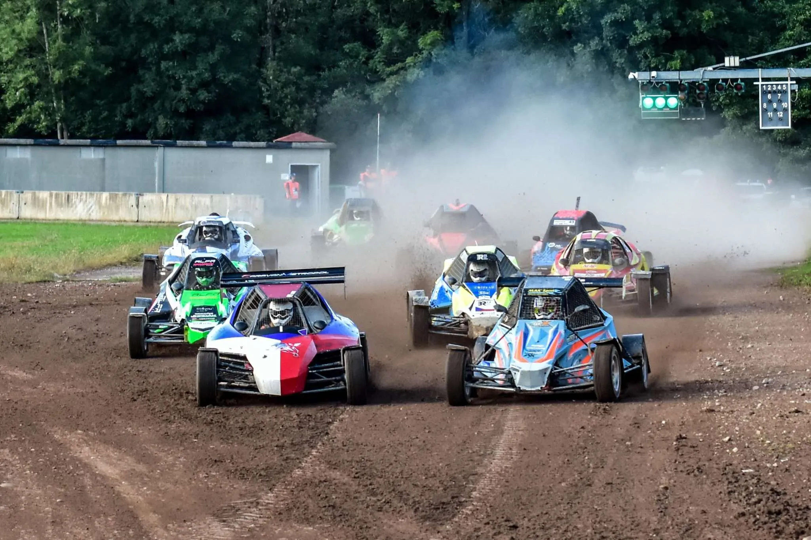
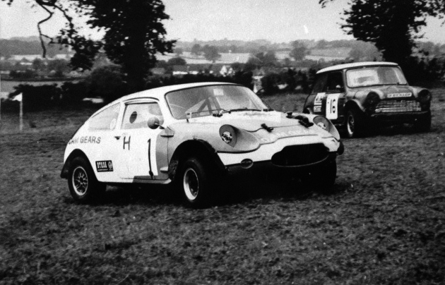
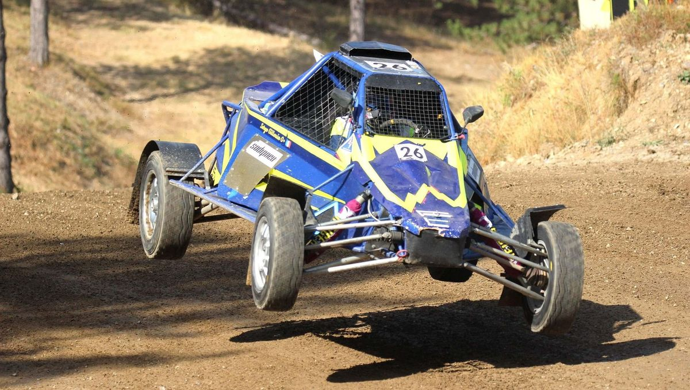
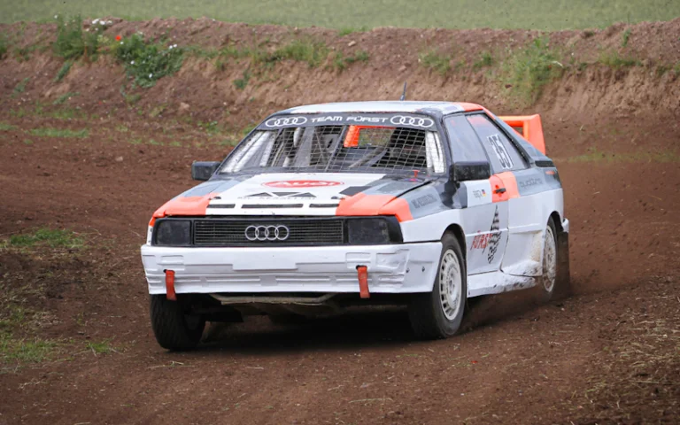

Комбинация от скорост, кал и контрол
Автокросът е форма на автомобилно състезание, провеждащо се на затворени трасета с естествен или изкуствен терен – кал, пръст, пясък. Целта е да се премине трасето възможно най-бързо, обикновено в серии от обиколки.
Автомобилите са специално подготвени за неравни повърхности – с подсилено окачване, гуми за всякакъв терен и често без излишна електроника. Автокросът е динамичен и често включва зрелищни завои, поднасяния и сблъсъци.
Автокросът възниква в Европа през средата на 20-ти век, като достъпна форма на състезание с модифицирани коли. С времето се утвърждава като дисциплина със собствени правила, категории и шампионати.
Днес има национални и европейски първенства, организирани от FIA, а България също има силни традиции в този спорт, с множество местни трасета и състезания.
Автокросът се дели на няколко основни вида според превозното средство:
Повечето състезания се провеждат на обиколки (5 до 10), като се оценява не само времето, но и позицията при финала.
В съвременния автокрос се използват усъвършенствани материали и окачване, които позволяват висока скорост и контрол върху неравен терен. Все по-често се срещат и електронни системи за телеметрия.
Въпреки това, автокросът запазва своя „механичен“ дух – успехът зависи повече от уменията на пилота и настройките на колата, отколкото от електроника.
Европейският шампионат по автокрос се провежда в няколко държави, включително Германия, Чехия, Латвия и България.
Официален сайтБългария има активно участие в автокрос спорта, с трасета в Ловеч, Хасково, Сливен и други градове.
Федерация по автомобилизъмБъгитата са особено популярни в европейските серии и се използват както от младежи, така и в елитни категории.
Примерна серия